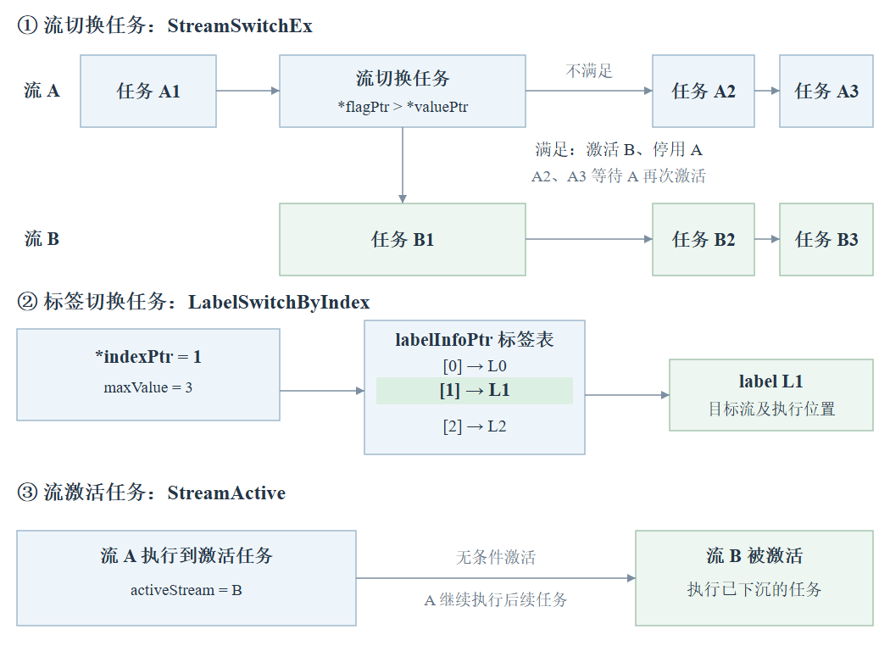

Snapshot 复盘笔记
01新老流程对比
在 upstream/master 提交 8ed7a689026b87b90d992c8ece0a1d282b2aec62 中，备份和恢复均保留两条路径：args == nullptr 进入旧流程；args != nullptr 进入 Driver Device 内存快照流程。新流程在备份和恢复时均检查驱动能力，备份时记录 API 版本，恢复时校验版本。
变化集中在 Device 内存内容的保存与回填。旧流程由 Runtime 收集地址并搬运到 Host；新流程由 Driver 按内存快照标识处理。模型 SQ 备份、参数池传输映射恢复、模型和图恢复仍保留。
入口分流与版本条件
| 项目 | 旧流程 | 新流程 |
|---|---|---|
| 入口 | args == nullptr无参 API 或 WithArgs(nullptr) | args != nullptrWithArgs(args) |
| flags | 传给 Driver 的值为 0 | 0 仍走新流程；1 包含 OPTIONAL 内存 |
| 前置检查 | 芯片快照能力、进程状态 | 同左；Driver Device 内存快照能力不支持时，返回 RT_ERROR_FEATURE_NOT_SUPPORT，终止备份或恢复 |
| 备份版本 | 不记录 | Context 同步后、模型 SQ 备份前记录：runtimeApiVersion ← 编译期 __HAL_API_VERSIONdriverApiVersion ← 运行时 halGetAPIVersion() |
| 恢复版本 | 不校验 | 设备恢复前，要求记录有效且两项版本分别相等；否则返回 RT_ERROR_SNAPSHOT_RESTORE_FAILED |
本节源码（8ed7a689026b）：ACL 参数分流Runtime 入口备份、恢复主流程版本记录与校验
备份流程
恢复流程
新流程：flags 与内存范围
| 内存类别 | Device 内存范围 | 备份 / 恢复 flags = 0 | 备份 / 恢复 flags = 1 |
|---|---|---|---|
| REQUIRED 强制备份内存 | 任务参数池、执行描述区、控制任务内存及标签表； Module 程序内存、AICPU SO / kernel 名称内存； SIMD、SIMT、AICPU printf 缓冲； 通过 ADVISE_SNAPSHOT_REQUIRED 补标记的传入 Device 地址 | Driver 备份 / 恢复 | Driver 备份 / 恢复 |
| OPTIONAL 可选备份内存 | Runtime 其余按 OPTIONAL 标记的内部 Device 内存 | 不包含 | 额外由 Driver 备份 / 恢复 |
| NO_BACKUP 无需备份内存 | 自定义 AICPU SO 重载的临时设备缓冲 | 不包含 | 不包含 |
REQUIRED 可在分配时打标，也可通过 MemAdvise 为已有 Device 地址补标。printf 缓冲属于 REQUIRED；下发 printf 配置的 devDfxMem、devDfxArgs 属于 OPTIONAL。
源码：主流程Driver flags入口默认 REQUIRED 分配模型 OPTIONAL 分配SIMD / SIMT printfAICPU printfprintf 配置参数
02Device → Host 备份数据来源
这一节追踪旧流程中 Runtime 实际执行 D2H 的数据。两份 Host 副本分别由 DeviceSnapshot 和 Runtime 持有，恢复时沿记录的 Device 地址回填。
2.1 ModelBackup：从模型任务中收集地址
ModelBackup(devId, false)→SinkTaskMemoryBackup→OpMemoryBackupContext 模型列表→Model::StreamList_()→TaskInfo→opVirtualAddrs_
OpMemoryBackup() 从模型任务的 TaskInfo 中收集 Device 地址和长度，登记到 opVirtualAddrs_。
地址来源按资源的创建路径区分。Runtime 为参数池、控制程序、标签表等资源申请内存，后续即使通过函数参数或返回值传递，仍属于 Runtime 内部资源。调用方为业务数据申请并管理的缓冲区，归为外部准备的资源，使用 rtMalloc / aclrtMalloc 也属于这类创建路径。公开 API 接收已有缓冲区、但尚未找到其原始申请点时，标为“原始申请未确认”。no-copy 和 DEVICE 只说明复用已有 Device 地址。
已有地址的 REQUIRED 补标：ADVISE_SNAPSHOT_REQUIRED = 4 将已有 Device 内存纳入 Driver 强制备份 / 恢复。调用链为 Driver::MemAdvise → NpuDriver::MemAdvise → halMemAdvise。各条目的补标记函数见“内存来源 / 快照标记”列；在任务初始化 / 下发时，能力支持才执行，失败返回错误。
源码：advise 标记定义MemAdvise → halMemAdvise补标记能力检查
① 算子参数与 Device 执行描述区5 项
SQE 如何把算子交给设备执行
SQ（提交队列）按提交顺序保存 SQE（任务提交描述条目）。对算子任务，SQE 把“执行哪段 kernel、启动多少个计算块、从哪里读取 args”交给设备。Runtime 从 TaskInfo 生成 SQE，再通过 Driver 下发到 SQ。
| 普通 AIC / AIV SQE 的字段（v100） | 执行时的作用 |
|---|---|
header.type、fftsType | 指定任务类型及 AIC / AIV 执行模式 |
header.block_dim | 指定本次 kernel 启动的计算块规模 |
pc_addr_low、pcAddrHigh | 保存 kernel 入口地址，设备从该地址开始执行算子代码 |
paramAddrLow、param_addr_high | 保存 args 地址，kernel 据此读取参数包中的输入 / 输出地址、tiling 参数和标量 |
普通 AIC / AIV：SQE 中的 kernel 入口和 args 地址 → 启动 kernel → kernel 读取 args
v100 MIX：SQE 中的描述区地址 → Device 执行描述区 → 各核的 kernel 入口和 args 地址
模型 SQ 备份保存这些提交条目；旧流程还分别保存 args 和 MIX 执行描述区的内存内容，恢复后供算子读取。
| 代码变量名称 | 主要作用 | 内存来源 / 快照标记 |
|---|---|---|
aicTaskInfo.comm.args | AICORE / AIVEC 的运行参数包。包含输入、输出的 Device 地址，tiling 地址或 tiling 数据；按算子格式还可包含 workspace 地址、标量等。具体布局由算子约定。普通 AIC/AIV 的执行配置直接写入 SQE；MIX 另有下行的 Device 执行描述区。 | 内部参数资源 / 复用已有地址拷贝路径：Runtime 从流参数资源、参数池取块，或按大小申请，见下方申请点。 no-copy：保留 argsInfo.args。公开入口如 rtsLaunchKernelWithDevArgs 接收已有地址，其原始申请未确认；Runtime 还提供已有任务参数的导出与再次传入路径。 |
aicTaskInfo.descAlignBuf | 指向 v100 AIC / AIV MIX 任务的 Device 执行描述区。描述区保存执行类型、kernel 入口地址、参数包地址、启动规模、AIC/AIV 配比，以及调度、QoS 和指令预取等配置，SQE 指向该描述区。 | Runtime 内部申请复用 MIX 参数 entry 的描述区，或由 RuntimeDevMemAlloc 调用 DevMemAllocWithBackupFlag 独立申请后对齐。MIX 的 args 使用 no-copy 时，描述区仍可来自内部 entry。 |
aicpuTaskInfo.comm.args | AICPU 算子的运行参数包。保存该算子所需的输入、输出地址、标量及自定义参数，布局由 AICPU 算子的调用格式约定。执行控制信息写入 AICPU SQE。 | 内部参数资源 / 复用已有地址拷贝路径：Runtime 分配参数资源。 已有地址：可以来自 Runtime 预先申请的 devDfxArgs、devCfgBuf；v200 启动链可用 no-copy 复用它们。公开接口传入地址的原始申请需另外确认。 REQUIRED 补标：StreamLaunchKernelEx 与 Stars v2 分支。 |
fftsPlusTask.descAlignBuf | 指向 FFTS Plus 任务的 Device 执行描述区。描述区包含各子任务的执行描述，按 context 类型记录执行配置、参数地址、启动规模和前后继依赖等信息；参数地址指向的独立内存需另行判断备份来源。 | HOST 内部申请 / DEVICE 复用HOST：Runtime 使用参数资源，或由 FftsPlusTmpAllocH2D 独立申请。 DEVICE：复用接口提供的 descBuf，原始申请未确认。 REQUIRED 补标：DEVICE 路径的 FftsPlusTaskInit。 |
fusionKernelTask.args | 融合任务的运行参数包。组织多个子算子执行所需的参数，供融合任务中的相应子算子读取。执行控制信息写入各子任务的 SQE。 | 内部参数资源 / 复用已有地址LoadArgsInfo 的 copy 分支使用 Runtime 参数资源；no-copy 分支保留 rtFusionArgsEx_t.args，原始申请未确认。SetArgsFusionKernel 只将结果地址写入任务。 |
tiling 地址指向 Device 中的 tiling 数据，后者保存计算规模、每核分工和核内分块等配置，kernel 通过该地址读取这些配置。
MIX 的 Device 执行描述区保存 args 地址及执行配置；args 的 D2H 保存该地址处的参数块内容。参数块内容可以包括输入、输出等地址值，标量，以及内联的 tiling 数据。
补充：TaskInfo 结构与地址关系
TaskInfo 通过所属 Stream 关联到 Runtime Context。
| 对象 | 记录的内容 | 与 OpMemory 备份的关系 |
|---|---|---|
TaskInfo | Host 侧的任务管理记录；专用字段中保存 args 地址、执行描述区地址及该任务的配置。 | 备份时从 TaskInfo 中提取 Device 地址。 |
| Device 执行描述区（context） | Device 上的一块内存；例如 v100 MIX 的 rtFftsPlusMixAicAivCtx_t，保存 kernel 入口地址、args 地址、启动规模及调度配置。 | TaskInfo.u.aicTaskInfo.descAlignBuf 等字段保存指向描述区的地址；D2H 复制该描述区的字节内容。 |
TaskInfo（Host 侧）
stream：所属的任务流
type / typeName：任务类型及名称
id：任务编号
taskSn：Dump、性能采集使用的跟踪序号
pos：任务在提交队列中的位置
stmArgPos：参数资源的位置，完成后用于回收
sqeNum：该任务下发的 SQE（提交条目）数量
bindFlag：所属流的模型绑定状态
updateFlag：保留、更新或禁用任务
needPostProc：完成后是否需要额外处理
error / drvErr：任务错误 / 驱动错误
errorCode：设备任务的具体错误码
enableProfiling：是否开启性能采集
taskTrackTimeStamp：任务跟踪时间戳
u：任务专用信息
按 type 使用对应成员，保存该类任务的参数地址、执行配置或控制信息。
成员包括 aicTaskInfo、aicpuTaskInfo、fftsPlusTask 等，共用联合体的存储空间。
pkgStat：完成报告统计
expectPackage：预计收到的完成报告数
receivePackage：已收到的完成报告数
② 流控制5 项
一个流可以包含多个任务，流控制任务本身也是其中的一项任务。执行到这项任务时，根据其控制动作，改变流的激活状态或后续执行位置。各个任务仍属于各自的流。
Stream：Runtime 管理的任务流。SQ（Submission Queue）：任务提交队列。SQ 存放提交给设备调度器的 SQE（Submission Queue Entry，任务提交描述条目）；Stream 记录关联的 SQ ID。
| 代码变量名称 | 主要作用 | 内存来源 / 快照标记 |
|---|---|---|
streamswitchTask.funcCallSvmMem | 条件切换流的 Device 控制指令 | Runtime 内部申请AllocFuncCallMemForStreamSwitchTask → DevMemAllocWithBackupFlag。 |
stmLabelSwitchIdxTask.funcCallSvmMem | 按索引跳转到标签位置的 Device 控制指令 | Runtime 内部申请AllocFuncCallMemForStmLblSwiByIdxTask → DevMemAllocWithBackupFlag。 |
stmLabelSwitchIdxTask.indexPtr | Device 中用于选取目标标签的索引值所在地址 | 公开 API 传入，原始申请未确认aclrtSwitchLabelByIndex 经 Runtime 标签切换接口传入 ptr，最终保存为 indexPtr。这条调用链使用已有地址，未包含索引缓冲区的申请。REQUIRED 补标：StreamLabelSwitchByIndexTaskInit。 |
stmLabelSwitchIdxTask.labelInfoPtr | 标签信息表所在的 Device 地址；表项记录目标 SQ 及队列中的执行位置 | 列表接口内部申请 / 旧接口接收已有地址列表创建接口：aclrtCreateLabelList 经 Context::LabelSwitchListCreate 调用 DevMemAllocWithBackupFlag 申请，再返回 labelList。调用方将它传回跳转接口，保存为 labelInfoPtr，仍属于 Runtime 创建的标签资源。旧接口：rtLabelListCpy 的实现 使用已有 dst，该表的原始申请未确认。 |
streamactiveTask.funcCallSvmMem | 激活目标流的 Device 控制指令 | Runtime 内部申请AllocFuncCallMemForStreamActiveTask → DevMemAllocWithBackupFlag。 |

标签标记任务提交队列中预先设置的执行位置。标签表的目标信息在标签设置流程中建立。
| 参数 | 指向的数据 | 作用 |
|---|---|---|
indexPtr | Device 中的索引值 k | 选择表中的第 k 项 |
labelInfoPtr | Device 中的标签信息表（跳转目标表） | 每项记录一个跳转目标：目标 SQ，以及队列中的执行位置 |
执行顺序：读取索引 k → 读取表中第 k 项 → 跳转到该项记录的目标 SQ 和队列位置。
③ 等待与同步3 项
| 代码变量名称 | 主要作用 | 内存来源 / 快照标记 |
|---|---|---|
memWaitValueTask.funcCallSvmMem2 | Device 执行的等待指令程序。读取当前状态、按目标值和规则比较，执行重复检查；条件满足后推进当前流后续任务的执行。D2H 保存这段程序的指令字节。 | Runtime 内部申请AllocFuncCallMemForMemWaitTask：普通任务调用 DevMemAllocWithBackupFlag 独立申请；CaptureWait 从 Model::MemWaitDevAlloc 申请的页中切片取得，再保存对齐地址。 |
memWaitValueTask.devAddr | 被等待状态值的 Device 地址。等待任务读取当前值判断条件；目标可以是数据内存，也可以是 Event 状态地址。 | 内部资源 / API 输入 / 映射地址普通 rtsValueWait 接收已有地址，原始申请未确认；Event 池、Capture 刷新表由 Runtime 内部申请；还存在 IPC 映射和跨设备 Event 寄存器地址。各分支的创建路径见下表。REQUIRED 补标：MemWaitValueTaskInit（CaptureWait 复用）。 |
rdmaPiValueModifyInfo.funCallMemAddr | RDMA PI 修改指令程序及目标地址列表。程序按列表逐个读取 Device 上的 RDMA 描述数据，更新其中的 PI 字段并写回。 | Runtime 内部申请RdmaPiValueModifyTaskInit 调用 DevMemAllocWithBackupFlag；funCallMemAddr 保存原始分配基址，对齐后的执行地址另存于 funCallMemAddrAlign。 |
等待目标地址的创建路径：
| 使用场景 | 地址从哪里来 | 归类 |
|---|---|---|
| 通用 ValueWait | rtsValueWait 接收调用方的 devAddr，经启动链传给任务；这条链未创建目标缓冲区。 | 公开 API 输入；原始申请未确认 |
| Software Event / Capture Wait | RecordSoftwareEvent 向 Event 池取项；池底层由 MallocBufferForEvent 调用 DevMemAllocWithBackupFlag 申请。等待时复用该项地址。 | Runtime 内部 Event 池资源 |
| Capture 外部等待刷新表 | AllocateExternalRefreshTable 在 Runtime 内部申请 externalEventRefreshDeviceBase_，再将 wait 表条目地址 交给等待任务。 | Runtime 内部刷新表资源；名称中的 external 表示等待场景 |
| IPC Event | 创建端 预留虚拟地址、申请物理内存并映射；打开端 导入共享句柄并映射。任务使用映射后的 Event 地址。 | Runtime 管理的 IPC 内存或导入映射 |
| 跨设备 Event | CalculateCrossDeviceEventAddr 按 Event 寄存器基址、设备偏移和 Event 编号计算目标地址。 | Event 寄存器地址 |
等待条件中的字段：
| 字段 | 具体含义 | 执行时的用途 |
|---|---|---|
devAddr | 当前状态值所在的 Device 地址 | 从该地址读取当前值。数值随其他任务的写入而变化，例如完成标记从 0 变为 1 |
value | 比较用的目标值，记录在 TaskInfo.u.memWaitValueTask.value 中 | 作为等待条件的比较依据；例如目标值为 1 |
flag | 比较规则，记录在 TaskInfo.u.memWaitValueTask.flag 中 | 0 表示当前值大于等于目标值，1 表示相等；还支持按位 AND、NOR 条件 |
以下控制动作均在 Device 侧执行。
| 控制动作 | 具体作用 |
|---|---|
| Notify Record / Wait | 通过 Notify 通知资源传递信号，有明确的 Record 通知任务。Record 发出通知后，当前流继续；Wait 等待指定通知，未满足时等待，满足后继续等待流的后续任务。 |
内存写值 / 等待值MemWrite / MemWaitValue | 通过内存状态值表达条件。写入者可以是 MemWriteValue 或直接更新该内存的计算任务，例如写入 done = 1；等待者读取 devAddr，条件满足后继续当前流的后续任务。状态值的写入者提供信号，无需专门的 Notify 对象。 |
流激活 / 条件切换StreamActive / StreamSwitch | Active 激活已存在的目标流，当前流可以继续。此处讨论的 STARS Switch 在条件成立时激活目标流、停用当前流；条件不成立时，当前流继续。 |
④ 模型任务更新3 项
这里的 tiling table 保存 key 与 kernel 入口地址的对应关系，tiling key 用来选择目标任务执行哪份算子代码，blockDim 指定启动多少个 block。前面的 tiling 数据交给选中的 kernel，告诉它每核处理多少数据、怎样分块计算。
| 代码变量名称 | 主要作用 | 内存来源 / 快照标记 |
|---|---|---|
mdlUpdateTask.tilingTabAddr | 模型任务更新时查询 kernel 的 tiling 表 | Runtime 内部申请Program::CopyTilingTabToDev 的两个平台分支均调用 DevMemAllocWithBackupFlag，并拷入表内容；返回的 devCopyMem 写入 tilingTabAddr。 |
v100：mdlUpdateTask.tilingKeyAddrv200_base： mdlUpdateTask.tilingKeyOffset | 选择 kernel 时使用的 tiling key 值所在地址 | 公开 API 传入，原始申请未确认rtModelTaskUpdate 接收 para->tilingKeyAddr；ACL 更新接口经 rtsLaunchUpdateTask 传入 funcEntryAddr。这些链路保存已有地址，仓内未确认缓冲区最初由谁申请。REQUIRED 补标：ModelTaskUpdateInit。 |
v100：mdlUpdateTask.blockDimAddrv200_base： mdlUpdateTask.blockDimOffset | 算子启动时的 block 数所在地址 | 公开 API 传入，原始申请未确认rtModelTaskUpdate 接收 para->blockDimAddr；ACL 更新接口经 rtsLaunchUpdateTask 传入 blockDimAddr。这些链路保存已有地址，仓内未确认缓冲区最初由谁申请。REQUIRED 补标：ModelTaskUpdateInit。 |
更新作用：MODEL_TASK_UPDATE 更新模型中指定任务的执行配置。目标流 ID 和目标任务 ID 用于定位要更新的任务。
地址字段：David 分支的 tilingKeyOffset / blockDimOffset 保存 Device 虚拟地址的整数值；非 David 分支的同名字段保存 MemAddressTranslate 的翻译结果，原虚拟地址另存于 tilingKeyAddr / blockDimAddr。
| 字段 | 指向的内存内容 | 作用 |
|---|---|---|
tilingTabAddr | 查询表：记录 tiling key 对应的 kernel 入口地址、MIX 类型等执行信息 | 根据 key 查找对应的 kernel 信息 |
tilingKeyAddrtilingKeyOffset | 一个 tiling key 数值 | 指定从查询表中选择哪种 kernel 实现 |
blockDimAddrblockDimOffset | 一个 blockDim 数值 | 提供新的启动 block 数量，更新目标任务的启动规模 |
参数池申请点
Runtime 内部参数资源包括流参数资源和 ArgLoader 使用的参数池、动态申请路径。H2DCopyMgr 池初始化或扩容时申请整块 Device 内存，再由 BufferAllocator 分出 entry；random-size 路径按大小直接申请。任务参数地址可以指向整块内存中的 entry 或偏移位置。
- 普通池：H2DCopyMgr::MallocBuffer。
- PCIe BAR 池：H2DCopyMgr::MallocPcieBarBuffer。
- UB 池：H2DCopyMgr::MallocUbBuffer。
- random-size：H2DCopyMgr::AllocDevMem(size)。
- v100 流参数资源：TaskResManage::MallocPcieBarBuffer 申请后按任务切分。
这些申请路径最终调用 Driver::DevMemAllocWithBackupFlag()。
Host 落点：申请总长度为 opTotalHostMemSize_ 的连续数组，保存到 opBackUpAddrs_；按地址列表顺序，以 offset 逐块拼接：
MemCopySync(hostAddr + offset, size, addr, size, RT_MEMCPY_DEVICE_TO_HOST);
offset += size;参数地址在 KernelLaunch 构造任务时进入 comm.args 等字段。参数块内部保存的张量地址不会触发递归遍历。opVirtualAddrs_ 使用 vector 逐项追加，同一地址可以出现多次。
ModelBackup 前半段还调用 SinkSqTasksBackup()：收集模型 stream 的 SQ ID，交给 NpuDriver::SqBackup()。SQ 的存储由 Driver 负责，这部分与上面的 Runtime D2H 参数副本分别保存。
ModelBackupHost 副本生成v100 地址收集v200_base 地址收集
2.2 ModuleBackup：从 Program 和 Module 中收集地址
代码入口为 Runtime::SaveModule()。它遍历 Program allocator 中仍有效的 Program，将 Device 内存信息组织成 ModuleMemInfo，放入 moduleBackupList_。
SaveModule→SaveModuleDataInfoToList(prog)→moduleBackupList_SaveModelAllDataToHost→node.devAddr → node.hostAddr
这些地址属于 Program 或 Module，供使用相应代码或名称的任务共享。下表按代码变量说明它服务于哪类任务，以及设备执行时怎样使用对应内容。
| 代码变量名称 | 对应任务与具体用途 | Device 地址的创建与记录 |
|---|---|---|
Program::baseAddrAlign_[devId] | AICORE / AIVEC 等使用该 Program 代码的 kernel 任务。指向指定 Device 上已加载的算子二进制。任务取得其中的 kernel 入口地址后，由设备执行对应代码。 | Runtime 内部申请BinaryLoad 从代码池取块或独立申请，再写入 Program；Module::Load 也可将自身代码地址记录到 Program。备份通过 GetBinAlignBaseAddr(devId) 读取。 |
Program::soNameDevAddrMap_[devId] | AICPU kernel 任务使用的 SO 名称地址缓存。按共享库名称记录 Device 字符串地址；这些地址供任务引用，设备侧按名称定位并加载所需的 SO。 | Runtime 内部申请并缓存CopyKernelLiteralNameToDevice 调用 DevMemAllocWithBackupFlag 并拷入名称，StoreKernelLiteralNameToDevice 将结果记入 SO 名称缓存；缓存命中时复用。 |
Program::funcNameDevAddrMap_[devId] | AICPU kernel 任务使用的函数入口名称地址缓存。按函数名记录 Device 字符串地址；任务引用该名称，在已加载的 SO 中查找函数入口并调用。 | Runtime 内部申请并缓存CopyKernelLiteralNameToDevice 申请并拷入函数名，StoreKernelLiteralNameToDevice 将结果记入函数名称缓存；缓存命中时复用。 |
Module::baseAddrAlign_ | 当前 Context 中使用该 Module 的 kernel 任务。指向 Module 已加载的算子代码；Module::GetFunction 用加载基址加 kernel 入口偏移取得执行地址。 | Runtime 内部申请Module::Load 从代码池取块；未取得池块时调用 DevMemAllocWithBackupFlag 独立申请，对齐后保存。备份从 Context 取得 Module，再调用 GetBaseAddr()。 |
Module::soNamesBaseAddr_ | 该 Module 的 AICPU 算子库加载流程。指向 Device 上保存 SO 名称的缓冲；名称内容来自 Program::GetSoName()，用于标明需要加载哪个共享库，供后续 AICPU 任务使用。 | Runtime 内部独立申请Module::Load 调用 DevMemAllocWithBackupFlag，再将 Program 的 SO 名称拷入。备份由 GetAicpuLoadInfo() 取得地址。 |
Module::kernelNamesBaseAddr_ | 该 Module 的 AICPU kernel 加载与入口查找流程。指向 Device 上的 kernel 名称缓冲，内容来自 Program::GetKernelNamesBuffer()；保存该库提供的 kernel 名称，供加载及后续任务查找入口使用。 | Runtime 内部独立申请Module::Load 调用 DevMemAllocWithBackupFlag，再将 Program 的 kernel 名称拷入。备份由 GetAicpuLoadInfo() 取得地址。 |
- 加载关系：同一 Program 在同一 Device 上复用一个 Module。Program 中的多个 Kernel 共用该 Module，通过各自的入口偏移定位设备代码。
- 对象与地址关系：Program 和 Module 都是 Host 侧管理对象，实际代码存放在 Device 内存中。Program 的设备地址记录与 Module 的代码基地址可以指向同一块代码内存。
代码池的整块 Device 内存由 MemoryPool::AllocDevMem 调用 DevMemAllocWithBackupFlag 申请，加载时再切出代码块。外部提供的 ELF / SO 文件是加载内容；表中的 Device 地址由上述 Runtime 加载流程创建。
算子二进制、SO 与 kernel：二进制表示编译产物，SO 表示共享库形式，kernel 表示具体的执行实现及入口。一个二进制或 SO 可以提供多个 kernel 入口。
| 概念 | 对应内容 | 作用 |
|---|---|---|
| 算子二进制 | 编译后的执行代码，可附带符号及元数据 | 供 Runtime 解析、注册和加载；例如 AICORE / AIVEC 的 ELF 二进制加载路径 |
SO（.so） | 共享库形式的二进制，库中包含函数实现 | AICPU 路径加载所需的 SO 库，再按函数名查找执行入口 |
| kernel | 算子的具体执行实现，具有可启动或调用的入口 | 从选定入口执行代码，按 args 提供的数据和配置完成计算 |
AICORE / AIVEC：加载二进制 → 由加载基址 + kernel 入口偏移取得代码地址 → 启动 kernel
AICPU：加载 SO → 按函数入口名定位 → 调用 kernel
源码：Program 的 AICPU SO / 函数名称地址缓存Module 加载代码、名称缓冲与计算入口ELF 解析与 kernel 注册AICPU SO 加载配置kernel 入口地址计算AICPU 注册名与函数名
03旧恢复流程及恢复内容
- 入口与前置状态：旧入口向
SnapShotProcessRestore()传入nullptr，外层要求状态为BACKED_UP。 - 回调顺序：先执行
RESTORE_PRE，完成下列恢复后，再执行RESTORE_POST。 - 结束状态：状态回到
LOCKED，随后由调用方执行 Unlock。
顺序依赖：设备和页表恢复后才能使用原 Device 地址；Stream 恢复后才能下发配置和内存拷贝任务；Module 与参数内容回填后，继续恢复参数池传输映射、模型 SQ 和图。
全局阶段：先完成所有 Device 的设备恢复与资源恢复，再恢复 Module。
SnapShotDeviceRestore：重开设备并恢复页表
- 重新打开设备：逐个调用
Device::ReOpen()，关闭主机侧设备连接，重新拉起 AICPU executor（设备侧算子执行进程），打开设备并更新 SSID。 - 恢复地址访问基础：调用
ProcessResRestore(0)，由 Driver（驱动）恢复进程资源和页表信息，使原设备地址重新可用。
- 重新打开设备：逐个调用
SnapShotResourceRestore：恢复运行资源与配置
- 恢复任务流：Context 先执行
StreamsTaskClean()，再执行StreamsRestore()，恢复默认流、创建的流及适用的控制流。 - 重新申请同步标识：逐设备重新申请 Event（事件）、Notify（通知）、CountNotify（计数通知）的 ID。
- 恢复运行配置：
ResourceRestore()恢复错误记录的环形缓冲区，按平台准备 Dcache（数据缓存）栈，重新发送 AICPU topic 版本、超时配置并启动 Dcache lock 操作。 - 重置事件扩展池：执行
EventExpandingPoolRestore()，重置池中的缓冲区。
- 恢复任务流：Context 先执行
RestoreModule：回填 Program / Module 内存
- 读取与写回：遍历
moduleBackupList_，把每个hostAddr的memSize字节写回记录的devAddr。 - 恢复内容：算子二进制加载区域、SO（Shared Object，共享库）名称、函数名称，以及 Module 的 AICPU 名称区域。
- 拷贝路径与属性：kernel 内存池中的地址走
BinaryPoolMemCopySync()，其余走BinaryMemCopySync()；携带节点的readonly属性。
- 读取与写回：遍历
逐 Device 阶段：对一个 Device 按下面顺序全部完成，再处理下一个 Device。
OpMemoryRestore：回填模型任务引用的内存
- 读取与写回：按
opVirtualAddrs_的顺序和长度，从opBackUpAddrs_ + offset取主机侧备份，写回记录的设备地址。 - 恢复内容：第 2.1 节的参数块、MIX/FFTS 执行上下文描述、func-call 指令程序及 tiling 相关数据。
- 下发并等待完成：通过当前 Context 的控制 SQ stream 执行
MemcopyAsync(..., HOST_TO_DEVICE)，最后调用Synchronize()等待回填完成。
- 读取与写回：按
ArgsPoolRestore：恢复主机与设备参数缓冲区的搬运地址关系
- 处理范围：
UmaArgLoader的普通、super、max、random 参数池。 - DMA 全称与作用：Direct Memory Access，直接内存访问，由专用硬件负责把主机侧参数数据搬到设备侧。
- 更新搬运地址信息：PCIe DMA 策略下，针对已有的主机侧和设备侧缓冲区调用
MemConvertAddr()，重新获取搬运所需的源地址、目标地址及相关信息，更新到cpyAddr.dmaAddr，供后续参数搬运使用。 - UB 策略分支：使用 UB 策略的这些参数池也会重新获取主机侧和设备侧的内存段描述；UB 的含义及描述内容见下一步。
- 处理范围：
UbArgsPoolRestore：恢复 UB 参数池的内存段访问资料
- UB 全称与含义：本节 UB 指 Unified Bus，统一总线。它是一套硬件互联方案，提供主机与设备之间的连接通路和通信规则：发送方按规定格式发出数据，接收方按同一规则识别并送到目标位置。
- 参数数据的路径：主机参数缓冲区（一块存放参数的内存） → UB 互联通路 → 设备参数缓冲区。
- 与 DMA 的区别：UB 提供部件之间的数据通信通路与规则；DMA 是由专用硬件执行内存搬运的机制。
- 处理范围：启用 UB 连接时，处理
UbArgLoader的普通和 super 参数池。 - 内存段描述：segment（内存段）是一段内存范围；这里的描述保存 UB 传输访问这段内存所需的信息。
- 更新两侧访问资料：对已有缓冲区调用
GetMemTsegInfo()，按主机地址、设备地址和长度重新获取两侧描述，刷新hostTsegInfo与devTsegInfo，使后续 UB 参数传输使用当前有效的访问资料。
ModelRestore：重建模型与 SQ 任务
- 处理范围：遍历该设备的活跃 Context 及 TS executor 模型；Software SQ capture 模型和 auto-split SQ 模型在这条遍历中跳过。
- 执行模型重建：对每个符合条件的模型调用
Model::ReBuild()，依次执行：
ReSetup()：重新申请 model ID；写入 Device 的 model ID、endGraph、activeEntryStream；重新申请模型 stream ID。ResetForRestore()：释放并清空旧的 streamInfo、aicpuTaskInfo、queueInfo 以及模型 func-call 相关内存和状态，为重新完成模型加载做准备。ReBindStreams()：将非 AICPU stream 重新绑定到模型，保留 head stream 标识。SinkSqTasksRestore()：收集模型 stream 的 SQ ID，调用 DriverSqRestore()恢复已备份的下沉队列任务。CheckRestoredSqStatus()：检查 SQ 未启用且 head 为 0，tail 的最终状态在后续加载完成流程校验。ModelLoadCompleteByStream()/LoadCompleteByStream()：按设备特性重新完成模型加载，建立执行所需信息。UpdateSnapShotSqe()：逐 stream 修正恢复后的任务信息。Device SQ 路径更新 StreamActive 的 func-call、适用的 2D memcpy DMA 信息，以及 StreamSwitch、ModelTaskUpdate 的 SQE；Software SQ 路径更新 Host SQE。
SnapShotAclGraphRestore：恢复 Software SQ capture 图资源
- 通信资源：按需重置 UB Jetty。
- 图模型资源：对已 capture ready 且启用 Software SQ 的 CaptureModel，重新申请 model ID 并调用
RestoreForSoftwareSq()。 - 队列资源池：最后恢复设备的
SqCqPool。
RestoreAiCpuKernelInfo：回填 ArgLoader 名称缓存
- 处理范围：遍历
UmaArgLoader::soNameMap_和kernelNameMap_。 - 数据来源与写回：把主机侧名称缓存保存的字符串写回对应的设备地址。
- 处理范围：遍历
AICPU timeout 清理：重置超时监控状态
- 清除超时状态：执行
ClearAicpuTimeoutState()。 - 关闭旧监控：非 PC 构建还调用
TryCloseAicpuMonitor()，为后续运行重新建立监控状态做准备。
- 清除超时状态：执行
BatchLoadCustomAicpuSo：重新加载自定义 SO
- 适用设备：备份时记录存在自定义 AICPU 进程的设备才进入该步骤。
- 加载数据来源：筛选已加载的 CPU Program，从主机侧
Program::Data()、LoadSize()和GetSoName()构造临时设备缓冲区。 - 加载与回收：执行
batchLoadsoFrombuf，同步后释放临时内存。
SetAicpuDfxForRestore：重新建立 printf DFX
- 适用条件：设备支持 AICPU DFX（维测功能），且 printf 已就绪。
- 恢复打印支持：执行
ReInitAicpuPrintfMem()、SetupAicpuPrintfDfx()，恢复 printf 所需的内存、地址配置及处理线程。
完整恢复顺序外层状态与回调Model ReBuild参数池传输映射恢复AICPU 名称回填
源码索引
以下链接固定到 upstream/master 的提交 c06e4cccb34ae5c5b616544250718879927da0d7，便于对照复盘时的实现。
- snapshot_process_helper.cc：流程分支、ModelBackup、ModelRestore、AICPU 恢复
- device_snapshot.cc：D2H/H2D 副本与参数池恢复
- v100/device_snapshot_adapter.cc：任务地址收集
- v200_base/device_snapshot_adapter.cc：任务地址收集
- runtime.cc：SaveModule、RestoreModule
- model_rebuild.cc：模型重建与 SQ 备份恢复
- context.cc：Stream 清理与恢复
- raw_device.cc：设备重开与配置恢复
- h2d_copy_mgr.cc：DMA / UB 映射更新
- uma_arg_loader.cc：AICPU 名称缓存回填
- stream.cc：SQE 修正